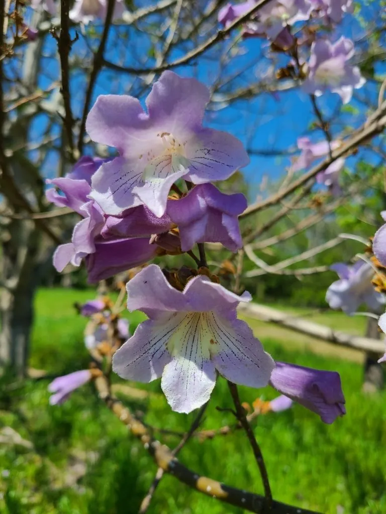

乔木 · 植物界
泡桐 Paulownia tomentosa

玄参科落叶乔木，生长极快，春季先花后叶、满树紫白，木材轻软共鸣性好，是制作乐器的上等材料。
- 分类
- 门被子植物门纲木兰纲目唇形目科玄参科属泡桐属
- 栖息环境
- 海拔 1200 米以下的平原、村旁与路旁，喜光喜温暖，耐轻盐碱
- 地理分布
- 原产中国黄河流域至长江流域；日本、朝鲜半岛及欧美有引种
- 保护级别
- 暂无评估；中国未列入国家重点保护野生植物名录
物种志
泡桐为玄参科泡桐属落叶乔木，高 15–25 米，树冠宽大，树皮灰褐色、平滑或浅裂。叶片大型，对生，卵形至心形，长 15–40 厘米，表面被柔毛。花大，漏斗状或钟状，淡紫色至白色，内面有紫斑，组成顶生的圆锥花序，花期 3–4 月，先花后叶，满树繁花；蒴果卵形，成熟后开裂，种子小而多，具膜质翅，果期 8–9 月。
泡桐原产中国，黄河流域至长江流域广泛分布，也引种到日本、朝鲜半岛及欧美。它喜光、喜温暖，生长极快，幼树每年可长高 2–3 米，适宜深厚疏松、排水良好的沙壤土，常用埋根繁殖。木材轻软、不易翘裂、共鸣性能好，是制作古筝、琵琶等民族乐器的上等材料，也可制家具与航空模型；叶、花可作饲料与绿肥，树皮可入药。泡桐花大而密，是春季重要的蜜源与观赏树种。
形态与习性
- 株高15–25 m，树冠宽大
- 花期3–4 月，先花后叶，花淡紫色
- 果期8–9 月，蒴果开裂、种子具翅
- 光照极喜光，不耐荫蔽
- 水分喜湿润，不耐长期积水
- 土壤深厚疏松、排水良好的沙壤土
- 主要用途乐器木材、家具，叶花作饲料与绿肥
趣味知识
- 泡桐生长极快，幼树一年可长高 2–3 米，是著名的速生树种。
- 泡桐木材共鸣性好，是制作古筝、琵琶等民族乐器的常用材料。
- 泡桐春季先花后叶，满树紫白色花朵，是华北平原的春日景象。
- 泡桐的叶片极大，可长到 40 厘米长，常被用来包裹食物。